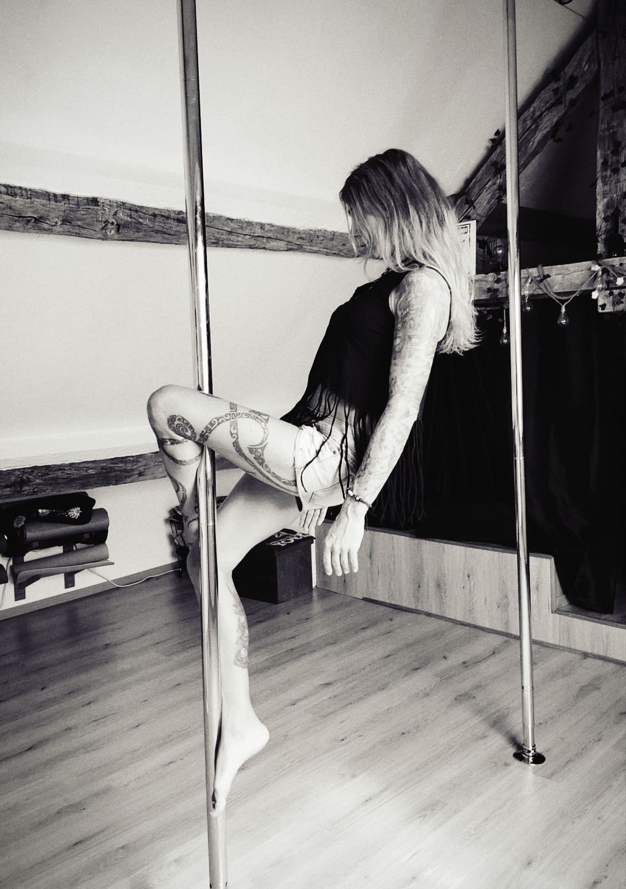
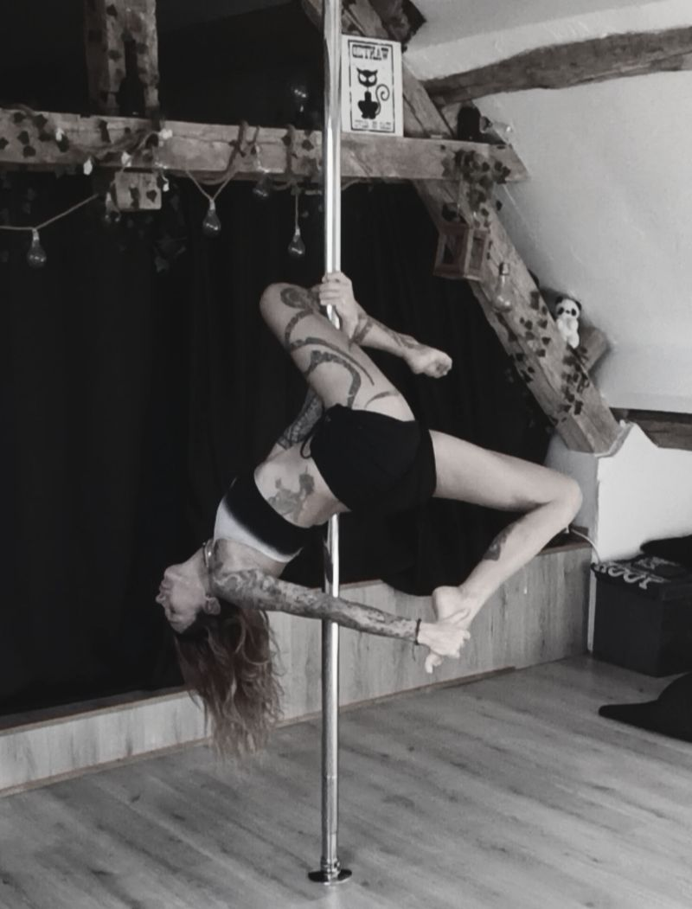
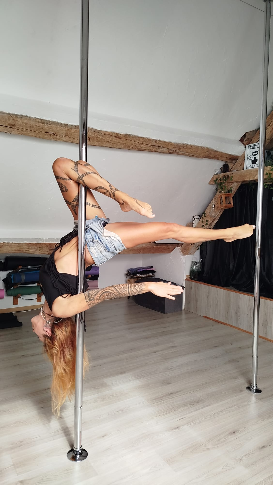
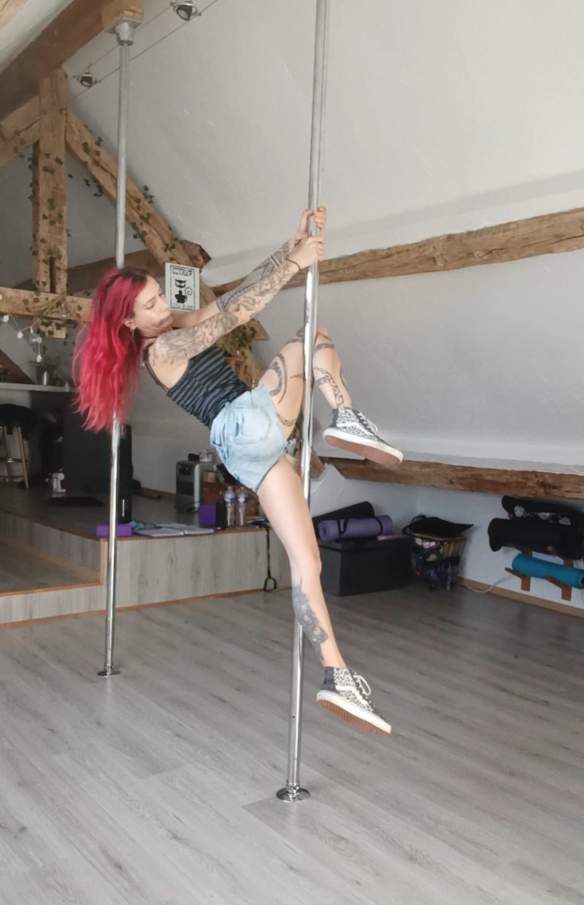

Un corps plus fort
La pole sollicite progressivement les bras, le dos, les épaules, les jambes et les muscles profonds. Le gainage et la maîtrise du corps se développent au fil des séances.
La pole dance, autrement
Et si vous essayiez une activité qui vous permet de bouger, de vous renforcer, de vous dépasser et surtout de vous faire plaisir ?
Chez Yog’n Moov, la pole dance se découvre à son rythme, dans un studio à taille humaine où chacun peut apprendre sans pression ni jugement.
Réserver une découverte Découvrir les coursFemmes et hommes · Aucun prérequis · Petits groupes

Un studio intimiste près d’Épernay
À Soulières · Groupes de 4 à 5 personnes · Bienveillance et convivialité
Bien plus qu’une figure
La pole dance associe le travail musculaire, la coordination, l’équilibre et l’expression corporelle. On apprend progressivement à se suspendre, à tourner autour de la barre, à enchaîner des mouvements et à découvrir de nouvelles possibilités.
Il n’est pas nécessaire d’être déjà sportive, musclée ou souple. La force se construit, la technique s’apprend et chaque progrès compte. Ici, on avance étape par étape, sans chercher à se comparer aux autres.
Les bienfaits
La progression ne se mesure pas uniquement aux figures réussies, mais aussi à tout ce que l’on découvre en chemin.
La pole sollicite progressivement les bras, le dos, les épaules, les jambes et les muscles profonds. Le gainage et la maîtrise du corps se développent au fil des séances.
Les exercices permettent de travailler la coordination, l’équilibre, la mobilité et la souplesse, chacun selon ses capacités et sans forcer.
Oser essayer, recommencer, puis réussir une figure procure une vraie satisfaction. La pole peut aider à prendre confiance et à porter un regard plus positif sur son corps.
En images
On teste, on rit, on recommence et on célèbre les progrès, même les plus petits.



Est-ce fait pour vous ?
Vous n’avez pas besoin d’être souple, musclé, sportif ou à l’aise avec votre image. Vous pouvez venir par curiosité, pour bouger autrement, retrouver confiance, relever un défi personnel ou simplement passer un bon moment.
Les cours s’adressent aux femmes et aux hommes. Les mouvements sont adaptés aux possibilités de chacun et les progrès se construisent progressivement. Aucun prérequis n’est nécessaire.
L’esprit Yog’n Moov
« Pas de jugement. Pas de compétition. Juste vous, votre progression et le plaisir de bouger. »
Des groupes de 4 à 5 personnes maximum, une ambiance conviviale, de la bienveillance et le droit de recommencer autant que nécessaire.
Comment s’habiller ?
Pour la pole dance, la peau doit être en contact avec la barre à certains endroits afin de favoriser l’adhérence. Une tenue qui laisse les jambes et certaines zones du haut du corps découvertes est donc souvent nécessaire.
Pas besoin d’acheter une tenue spéciale pour votre premier cours : l’essentiel est d’être à l’aise et de pouvoir bouger.
Dans votre sac
Le déroulement d’un cours
Une séance comprend un échauffement, un travail technique adapté, l’apprentissage progressif de mouvements et un retour au calme selon le contenu du cours. L’échauffement est important : arrivez à l’heure afin de pouvoir y participer entièrement.
Les figures ne sont jamais à réussir à tout prix. On adapte les exercices, on prend le temps de comprendre les placements et on respecte les sensations de son corps. En cas de douleur inhabituelle, on arrête le mouvement et on en parle à l’enseignante.
Un studio à taille humaine
À Soulières, à environ 15 minutes d’Épernay, Yog’n Moov vous accueille dans un studio intimiste, loin des grandes salles impersonnelles.
Les groupes de 4 à 5 personnes permettent de bénéficier d’un accompagnement attentif et de partager une activité dans une ambiance détendue. On apprend, on rit, on recommence et on avance ensemble, sans jugement.
Plusieurs façons de pratiquer
Vous pouvez découvrir la pole en cours collectif ou choisir un format plus personnalisé selon vos besoins :
Prêt·e à essayer ?
Une question, une hésitation ou envie de connaître les prochains créneaux ? Contactez-moi pour échanger et réserver votre séance découverte.
Appeler le 06 32 51 49 50 Écrire sur WhatsAppYog’n Moov Pole Dance · Soulières (51130), près d’Épernay
Les places sont limitées.
Contactez-moi pour connaître les disponibilités et trouver le format qui vous convient.